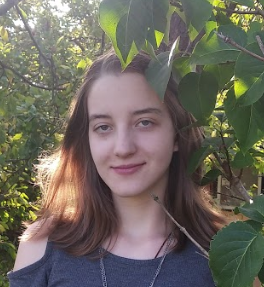

Artystka. Pisarka. Rzemieślniczka słowa.

Na co dzień zajmuję się copywritingiem, nauką i zdobywaniem nowych umiejętności. Blog to moje miejsce do
pisania o tym, o czym naprawdę chcę. Do dzielenia się cząstką mojej wiedzy, przemyśleń i talentu.
Piszę, odkąd tylko pamiętam. Gdy miałam dwa lata podobno byłam już tak zakochana w książkach, że recytowałam
je na pamięć, choć jeszcze oczywiście nie potrafiłam czytać. Gdy miałam 6 lat oznajmiłam mojemu tacie, że
zostanę pisarką. Odpowiedział mi wtedy, że musiałabym przeczytać dużo więcej książek. 6 lat i setki
przeczytanych książek później po raz pierwszy wygrałam konkurs literacki, a moje opowiadanie ,,Kraksa i
Rozwaga” zostało opublikowane.
Teraz mam już prawie 20 lat, nieprzeliczone mnóstwo przeczytanych pozycji literackich, miejsca na podium w
kilku konkursach i ogromną chęć do stworzenia wreszcie czegoś dużego. Bo czym jest talent, jeśli nie
dzielimy się nim z innymi?
Zapraszam na mojego kolorowego bloga o byciu nastolatkiem, niepewnościach, przezwyciężaniu trudności i
przeżywaniu życia na swoich zasadach. Wszystko to okraszone baśniami, zabawnymi anegdotkami i od czasu do
czasu odrobiną inspiracji.